6. ArangoDB
6.1. A multi-model database
As for RDBMS, there are many different implementations of document-oriented databases. Unfortunately, as the NoSQL field is much younger than the RDBMS area, things have not settled enough so that standards are formed. In the RDBMS world, there are many implementations such as Oracle, MySQL, PostgreSQL, Microsoft Access, etc, but they all conform to the same standard for querying their data: SQL. In the NoSQL world, however, this is very different and different implementations use very different query languages. For example, a search in the document store MongoDB (which is widely used) looks like this:
db.individuals.findAll({ethnicity: "African"}, {genotypes: 1})whereas it would look like this in ArangoDB:
FOR i IN individuals
FILTER i.ethnicity = 'African'
RETURN i.genotypesThe same is true for graph databases. A query in the popular Neo4j database can look like this (in what is called the cypher language):
MATCH (a)-[:WORKS_FOR]->(b:Company {name: "Microsoft"}) RETURN awould be the following in gremlin:
g.V().out('works_for').inV().hasLabel("Company").has("name", "Microsoft")whereas it would look like this in ArangoDB (in AQL):
FOR a IN individuals
FOR v,e,p IN 1..1 OUTBOUND a GRAPH 'works_for'
FILTER v.name = 'Microsoft'
RETURN aFurther in this post we’ll be using ArangoDB as our database, because - for this course - we can then at least stick with one query language.
6.2. Starting with ArangoDB
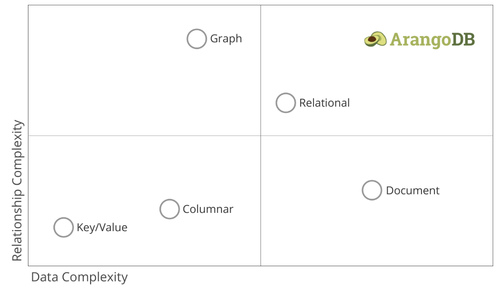
6.2.1. Installation
The easiest way to install ArangoDB is to download it from here. Make sure to check the Installation Manual:
-
for Windows: https://www.arangodb.com/docs/stable/installation-windows.html
-
for MacOS: https://www.arangodb.com/docs/stable/installation-mac-osx.html ⇒ probably easiest to use the second option and install it using the .dmg package
-
linux: installation options available for CentOS, Fedora, Redhat, Debian, Ubuntu, SuSE and ArchLinux
For getting started with ArangoDB, see https://www.arangodb.com/docs/stable/getting-started.html. Some of the following is extracted from that documentation. After installing ArangoDB, you can access the web interface at http://localhost:8529; log in as user root (without a password) and connect to the _system database. (Note that in a real setup, the root user would only be used for administrative purposes, and you would first create a new username. For the sake of simplicity, we’ll take a shortcut here.)
6.2.2. Web interface vs arangosh
In the context of this course, we will use the web interface for ArangoDB. Although very easy to use, it does have some shortcomings compared to the command line arangosh, or using ArangoDB from within programs written in python or other languages. For example, we won’t be able to run centrality queries using the web interface. If you’re even a little bit serious about using databases, you should get yourself acquainted with the shell as well.
6.3. Loading data
6.3.1. Document data
Let’s load some data. Download the list of airports in the US from http://vda-lab.github.io/assets/airports.json. This file looks like this:
{"_key": "00M", "name": "Thigpen ", "city": "Bay Springs", "state": "MS", "country": "USA",
"lat": 31.95376472, "long": -89.23450472, "vip": false}
{"_key": "00R", "name": "Livingston Municipal", "city": "Livingston", "state": "TX", "country": "USA",
"lat": 30.68586111, "long": -95.01792778, "vip": false}
{"_key": "00V", "name": "Meadow Lake", "city": "Colorado Springs", "state": "CO", "country": "USA",
"lat": 38.94574889, "long": -104.5698933, "vip": false}
...Remember from above that document databases often use JSON as their format. To load this into ArangoDB:
-
Create a new collection (
Collections→Add Collection) with the nameairports. Thetypeshould bedocument. 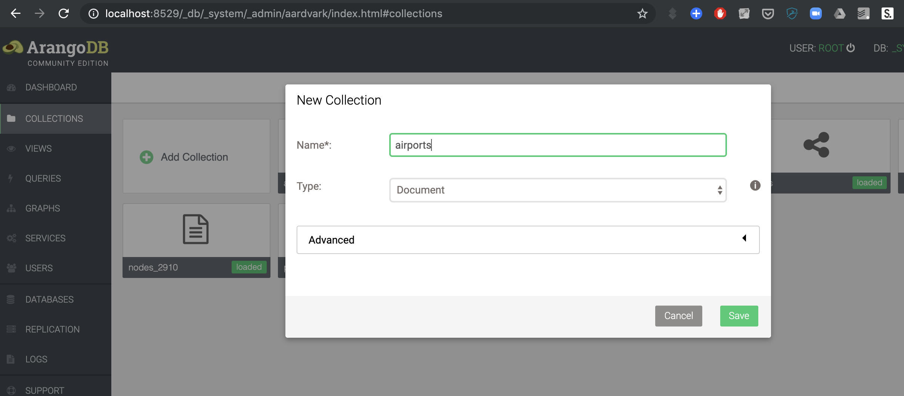 -
Click on the collection, and then the
Upload documents from JSON filebutton at the top. -
Select the
airports.jsonfile that you just downloaded onto your computer.
You should end up with something like this:
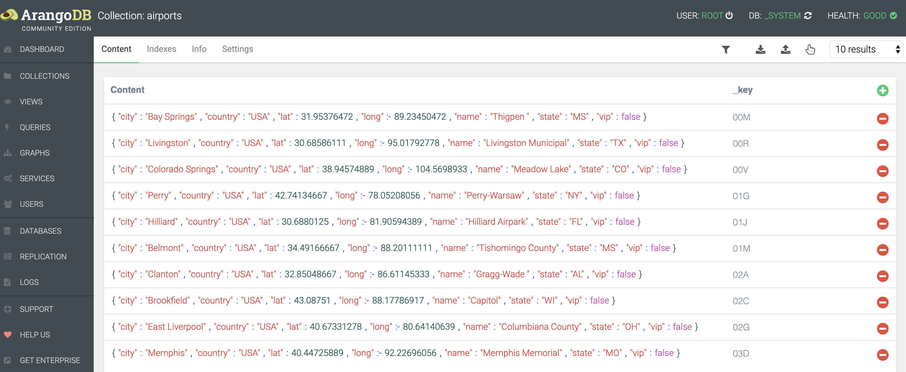
Notice that every document has a _key defined.
6.3.2. Link data
In addition to _key, ArangoDB documents can have other special keys. In a graph context, links are nothing more than regular documents, but which have a _from and _to key to refer to other documents that are the nodes. So links in ArangoDB are basically also just documents, but with the special keys _from and _to. This means that we can also query them as documents (which is what we will actually do later.
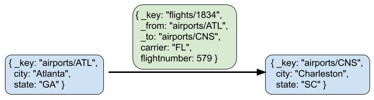
We have a flight dataset, that you can download from http://vda-lab.github.io/assets/flights.json. Similar to loading the airports dataset, we go to the Collections page in the webinterface, and click Upload. This time, however, we need to set the type to Edge rather than Document.
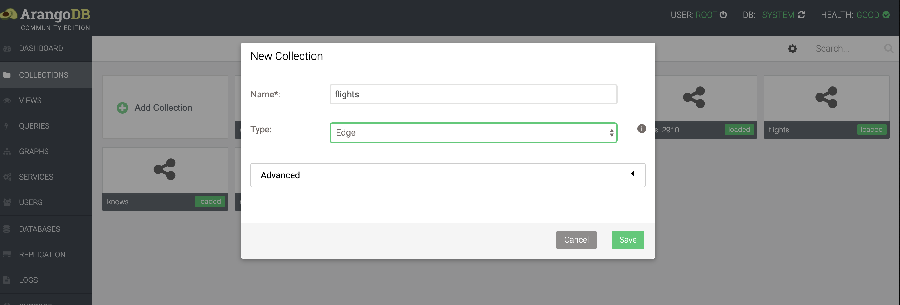
This is what a single flight looks like:
{
"_key": "1834", "_id": "flights/1834",
"_from": "airports/ATL", "_to": "airports/CHS", "_rev": "_ZRp7f-S---",
"Year": 2008, "Month": 1, "Day": 1, "DayOfWeek": 2,
"DepTimeUTC": "2008-01-01T05:02:00.000Z", "ArrTimeUTC": "2008-01-01T05:57:00.000Z",
"UniqueCarrier": "FL", "FlightNum": 579, "TailNum": "N937AT", "Distance": 259
}6.4. Querying key/value data
As mentioned above, key/value stores are very quick for returning documents given a certain key. ArangoDB can be used as a key/value store as well. Remember from above that a key/value store should only do these things:
-
Create a document with a given key
-
Return a document given a key
-
Delete a document given a key
Let’s try these out. But before we do so, it’d be cleaner if we created a new collection just for this purpose. Go to Collections and create a new collection named keyvalues.
ArangoDB uses its own query language, called AQL, to access the data in the different collections. Go to the Queries section in the web interface.
6.4.1. Creating a key/value pair
INSERT {_key: "a", value: "some text"} INTO keyvaluesThis created our first key/value pair! The value can be anything, as we mentioned above:
INSERT {_key: "b", value: [1,2,3,4,5]} INTO keyvalues
INSERT {_key: "c", value: {first: 1, second: 2}} INTO keyvaluesNote that you can only do one insert at a time in the ArangoDB webinterface. So to insert both, you can write:
FOR i in [
{ "_key": "b", "value": [1,2,3,4,5] },
{ "_key": "c", "value": {first: 1, second: 2} }]
INSERT i IN keyvalues(We’ll come back to the FOR loop etc in the next section.)
6.4.2. Retrieving a key/value pair
To retrieve a document given a certain key (in this case “c”), we can run the query
RETURN DOCUMENT('keyvalues/c').valueHow this works will get much more clear as we move further down in this post…
6.4.3. Removing a key/value pair
To remove a key/value pair (e.g. the pair for key b), we run the following:
REMOVE 'b' IN keyvaluesRetrieving and removing key/value pairs are very fast in ArangoDB, because the _key attribute is indexed by default.
6.5. Querying document data
Having stored our data in the airports and flights collections, we can query these in the Query section. An overview of the possible high-level operations can be found here: https://www.arangodb.com/docs/stable/aql/operations.html. From that website:
-
FOR: Iterate over a collection or View, all elements of an array or traverse a graph -
RETURN: Produce the result of a query. -
FILTER: Restrict the results to elements that match arbitrary logical conditions. -
SEARCH: Query the (full-text) index of an ArangoSearch View -
SORT: Force a sort of the array of already produced intermediate results. -
LIMIT: Reduce the number of elements in the result to at most the specified number, optionally skip elements (pagination). -
LET: Assign an arbitrary value to a variable. -
COLLECT: Group an array by one or multiple group criteria. Can also count and aggregate.
We’ll go over some of these below.
Note: When in the following section I write something like "equivalent in SQL" with an actual SQL query, this will actually be hypothetical. In other words: you cannot run that actual query on the ArangoDB database as that would not work. It would work if you’d first make an SQL database (e.g. using sqlite as seen in the previous session) and created the necessary tables and rows…
6.5.1. `RETURN`ing a result
The most straightforward way to get a document is to select it by key. When doing this, you have to prepend the key with the name of the collection:
RETURN DOCUMENT("airports/JFK")The above basically treats the ArangoDB database as a key/value store.
You can also get multiple documents if you provide an array of keys instead of a single one:
RETURN DOCUMENT(["airports/JFK","airports/03D"])Notice the square brackets around the keys!
6.5.2. FOR: Looping over all documents
Remember that in SQL, a query looked like this:
SELECT state
FROM airports
WHERE lat > 35;SQL is a declarative language, which means that you tell the RDBMS what you want, not how to get it. This is not exactly true for AQL, which does need you to specify that you want to loop over all documents. The same query as the SQL one above in AQL would be:
FOR a IN airports
FILTER a.lat > 35
RETURN a.stateSimilarly, the minimal SQL query is:
SELECT * FROM airports;, whereas the minimal AQL query is:
FOR a IN airports
RETURN aYou can nest FOR statements, in which case you’ll get the cross project:
FOR a IN [1,2,3]
FOR b IN [10,20,30]
RETURN [a, b]This will return:
1 10
2 10
3 10
1 20
2 20
3 20
1 30
2 30
3 306.5.3. Projections
If you don’t want to return the whole document, you can specify this in the RETURN statement. This is called a projection. For example:
FOR a IN airports
RETURN a.nameApart from a single value per document, we can also return arrays or maps:
FOR a IN airports
RETURN [a.name, a.state]FOR a IN airports
RETURN { "name": a.name, "state": a.state }This is equivalent to specifying the column names in an SQL query:
SELECT name, state
FROM airports;6.5.4. Returning only DISTINCT results
FOR a IN airports
RETURN DISTINCT a.state6.5.5. `FILTER`ing documents
Data can be filtered using FILTER:
FOR a IN airports
FILTER a.state == 'CA'
RETURN aTo combine different filters, you can use AND and OR:
FOR a IN airports
FILTER a.state == 'CA'
AND a.vip == true
RETURN aFOR a IN airports
FILTER a.state == 'CA'
OR a.vip == true
RETURN aIt is often recommended to use parentheses to clarify the order of the filters:
FOR a IN airports
FILTER ( a.state == 'CA' OR a.vip == true )
RETURN aInstead of AND, you can also apply multiple filters consecutively:
FOR a IN airports
FILTER a.state == 'CA'
FILTER a.vip == true
RETURN a|
Important
|
All steps in the FOR loop are executed from top to bottom. So the order in which they appear is important (see further).
|
6.5.6. `SORT`ing the results
FOR a IN airports
SORT a.lat
RETURN [ a.name, a.lat ]As in SQL, AQL allows you do sort in descending order:
FOR a IN airports
SORT a.lat DESC
RETURN [ a.name, a.lat ]6.5.7. Combining different filters, limits, etc
Remember that in SQL, you can combine different filters, sortings etc.
In SQL:
SELECT * FROM airports
WHERE a.state = 'CA'
AND a.lat > 20
AND vip = true
SORT BY lat
LIMIT 15;In AQL, the different filters, sorts, limits, etc are applied top to bottom, so order is important! This means that the following two do not necessarily give the same results.
Here are 2 versions (one correct, one wrong) of a query to get (max) 5 airports in California with a VIP lounge. ===== Version 1
FOR a IN airports
FILTER a.vip == true
FILTER a.state == 'CA'
LIMIT 5
RETURN aLet’s break this down step by step and see what we get in the intermediate phases:
FOR a IN airports
FILTER a.vip == true
RETURN areturns:
| _key | _id | _rev | name | city | state | country | lat | long | vip |
|---|---|---|---|---|---|---|---|---|---|
AMA |
airports/AMA |
_ZbpOKxW-Aa |
Amarillo International |
Amarillo |
TX |
USA |
35.2193725 |
-101.7059272 |
true |
ATL |
airports/ATL |
_ZbpOKxa-_E |
William B Hartsfield-Atlanta Intl |
Atlanta |
GA |
USA |
33.64044444 |
-84.42694444 |
true |
DFW |
airports/DFW |
_ZbpOKxu—I |
Dallas-Fort Worth International |
Dallas-Fort Worth |
TX |
USA |
32.89595056 |
-97.0372 |
true |
JFK |
airports/JFK |
_ZbpOKyK-Aa |
John F Kennedy Intl |
New York |
NY |
USA |
40.63975111 |
-73.77892556 |
true |
LAX |
airports/LAX |
_ZbpOKyS-_c |
Los Angeles International |
Los Angeles |
CA |
USA |
33.94253611 |
-118.4080744 |
true |
ORD |
airports/ORD |
_ZbpOKyq-AS |
Chicago O’Hare International |
Chicago |
IL |
USA |
41.979595 |
-87.90446417 |
true |
SFO |
airports/SFO |
_ZbpOKz—A- |
San Francisco International |
San Francisco |
CA |
USA |
37.61900194 |
-122.3748433 |
true |
We see that there are 7 airports in the US with a VIP lounge. Let’s add the second filter:
FOR a IN airports
FILTER a.vip == true
FILTER a.state == 'CA'
RETURN areturns:
| _key | _id | _rev | name | city | state | country | lat | long | vip |
|---|---|---|---|---|---|---|---|---|---|
LAX |
airports/LAX |
_ZbpOKyS-_c |
Los Angeles International |
Los Angeles |
CA |
USA |
33.94253611 |
-118.4080744 |
true |
SFO |
airports/SFO |
_ZbpOKz—A- |
San Francisco International |
San Francisco |
CA |
USA |
37.61900194 |
-122.3748433 |
true |
Finally, we limit the output to a maximum of 5 records, but we only have 2 anyway…
Version 2
In the second version, we switched the FILTER a.state == 'CA' and LIMIT 5:
FOR a IN airports
FILTER a.vip == true
LIMIT 5
FILTER a.state == 'CA'
RETURN aAgain, let’s see what happens step by step:
FOR a IN airports
FILTER a.vip == true
RETURN areturns:
| _key | _id | _rev | name | city | state | country | lat | long | vip |
|---|---|---|---|---|---|---|---|---|---|
AMA |
airports/AMA |
_ZbpOKxW-Aa |
Amarillo International |
Amarillo |
TX |
USA |
35.2193725 |
-101.7059272 |
true |
ATL |
airports/ATL |
_ZbpOKxa-_E |
William B Hartsfield-Atlanta Intl |
Atlanta |
GA |
USA |
33.64044444 |
-84.42694444 |
true |
DFW |
airports/DFW |
_ZbpOKxu—I |
Dallas-Fort Worth International |
Dallas-Fort Worth |
TX |
USA |
32.89595056 |
-97.0372 |
true |
JFK |
airports/JFK |
_ZbpOKyK-Aa |
John F Kennedy Intl |
New York |
NY |
USA |
40.63975111 |
-73.77892556 |
true |
LAX |
airports/LAX |
_ZbpOKyS-_c |
Los Angeles International |
Los Angeles |
CA |
USA |
33.94253611 |
-118.4080744 |
true |
ORD |
airports/ORD |
_ZbpOKyq-AS |
Chicago O’Hare International |
Chicago |
IL |
USA |
41.979595 |
-87.90446417 |
true |
SFO |
airports/SFO |
_ZbpOKz—A- |
San Francisco International |
San Francisco |
CA |
USA |
37.61900194 |
-122.3748433 |
true |
In the second step, we limit the output to maximum 5 records:
FOR a IN airports
FILTER a.vip == true
LIMIT 5
RETURN areturns:
| _key | _id | _rev | name | city | state | country | lat | long | vip |
|---|---|---|---|---|---|---|---|---|---|
AMA |
airports/AMA |
_ZbpOKxW-Aa |
Amarillo International |
Amarillo |
TX |
USA |
35.2193725 |
-101.7059272 |
true |
ATL |
airports/ATL |
_ZbpOKxa-_E |
William B Hartsfield-Atlanta Intl |
Atlanta |
GA |
USA |
33.64044444 |
-84.42694444 |
true |
DFW |
airports/DFW |
_ZbpOKxu—I |
Dallas-Fort Worth International |
Dallas-Fort Worth |
TX |
USA |
32.89595056 |
-97.0372 |
true |
JFK |
airports/JFK |
_ZbpOKyK-Aa |
John F Kennedy Intl |
New York |
NY |
USA |
40.63975111 |
-73.77892556 |
true |
LAX |
airports/LAX |
_ZbpOKyS-_c |
Los Angeles International |
Los Angeles |
CA |
USA |
33.94253611 |
-118.4080744 |
true |
If we look closely, we now have lost SFO airport…
In our final step, we pick those airports that are in California:
FOR a IN airports
FILTER a.vip == true
LIMIT 5
FILTER a.state == 'CA'
RETURN areturns:
| _key | _id | _rev | name | city | state | country | lat | long | vip |
|---|---|---|---|---|---|---|---|---|---|
LAX |
airports/LAX |
_ZbpOKyS-_c |
Los Angeles International |
Los Angeles |
CA |
USA |
33.94253611 |
-118.4080744 |
true |
Because we already lost SFO along the way we can’t show that anymore, meaning that our output is not correct.
6.5.8. LET: defining variables
In some cases it becomes complex or even impossible to put the whole query in a single nested combination of FOR loops, FILTER`s and `SORT`s. Sometimes it’s easier to extract some data separately. That’s where `LET comes in.
The following two queries give the same result:
FOR a IN airports
RETURN aLET myAirports = (
FOR a IN airports
RETURN a
)
FOR m IN myAirports
RETURN mHere’s an example where a LET is necessary. If we want to find out which airports to get to in 2 stops starting from Adak (ADK), we could first find out which airports can be reached directly from ADK, write those down, and then for each of these do a separate query to find the second airport. Or we can put the airports reached directly in an array that we loop over afterwards:
LET arrivals1 = (
FOR f IN flights
FILTER f._from == 'airports/ADK'
RETURN f._to)
FOR a IN arrivals1
FOR f IN flights
FILTER f._from == a
RETURN DISTINCT f._toThe output:
[ "airports/SEA", "airports/PDX", "airports/SLC", "airports/PHX",
"airports/FAI", "airports/ADQ", "airports/JNU", "airports/MSP",
"airports/OME", "airports/BET", "airports/SCC", "airports/HNL",
"airports/CDV", "airports/LAS", "airports/OTZ", "airports/ORD",
"airports/IAH", "airports/ADK" ]Notice that the last element in the list is ADK itself because obviously you can reach it again in 2 stops.
6.5.9. Functions in ArangoDB
ArangoDB includes a large collections of functions that can be run at different levels, e.g. to analyse the underlying database, to calculate aggregates like minimum and maximum from an array, to calculating the geographical distance between two locations on a map, to concatenate strings, etc. For a full list of functions see https://www.arangodb.com/docs/stable/aql/functions.html.
Let’s have a look at some of these.
CONCAT and CONCAT_SEPARATOR
Using CONCAT and CONCAT_SEPARATOR we can return whole strings instead of just arrays and documents.
FOR f IN flights
LIMIT 10
RETURN [f.FlightNum, f._from, f._to]FOR f IN flights
LIMIT 10
RETURN CONCAT("Flight ", f.FlightNum, " departs from ", f._from, " and goes to ", f._to, ".")returns
[
"Flight 579 departs from airports/ATL and goes to airports/CHS.",
"Flight 2895 departs from airports/CLE and goes to airports/SAT.",
"Flight 7185 departs from airports/IAD and goes to airports/CLE.",
"Flight 859 departs from airports/JFK and goes to airports/PBI.",
"Flight 5169 departs from airports/CVG and goes to airports/MHT.",
"Flight 9 departs from airports/JFK and goes to airports/SFO.",
"Flight 1831 departs from airports/MIA and goes to airports/TPA.",
"Flight 5448 departs from airports/CVG and goes to airports/GSO.",
"Flight 878 departs from airports/FLL and goes to airports/JFK.",
"Flight 680 departs from airports/TPA and goes to airports/PBI."
]Something similar can be done with providing a separator. This can be useful when you’re creating a comma-separated file.
FOR f IN flights
LIMIT 10
RETURN CONCAT_SEPARATOR(' -> ', f._from, f._to)returns
[
"airports/ATL -> airports/CHS",
"airports/CLE -> airports/SAT",
"airports/IAD -> airports/CLE",
"airports/JFK -> airports/PBI",
"airports/CVG -> airports/MHT",
"airports/JFK -> airports/SFO",
"airports/MIA -> airports/TPA",
"airports/CVG -> airports/GSO",
"airports/FLL -> airports/JFK",
"airports/TPA -> airports/PBI"
]MIN and MAX
These functions do what you expect them to do. See later in this post when we’re looking at [aggregation](#aggregation).
RETURN MAX([1,5,20,1,4])6.5.10. Subqueries
Remember that in SQL, we can replace the table mentioned in the FROM clause with a whole SQL statement, something like this:
SELECT COUNT(*) FROM (
SELECT name FROM airports
WHERE state = 'TX');We can do something similar with AQL. For argument’s sake, let’s wrap a simple query into another one which just returns the result of the inner query:
FOR s IN (
FOR a IN airports
LIMIT 2
RETURN a
)
RETURN sThis is exactly the same as if we would have run only the inner query. An AQL query similar to the SQL query above:
FOR airport IN (
FOR a IN airports
FILTER a.state == "TX"
RETURN a
)
COLLECT WITH COUNT INTO c
RETURN cDon’t worry about the COLLECT WITH COUNT INTO yet. We’ll come back to that below…
6.5.11. Joining collections
Inner joins
Just like inner joins in RDBMS, it is simple to combine different collections. In AQL we do this by nesting FOR loops. But like in RDBMS joins we have to make sure that there exists a FILTER in the inner loop to match up IDs. For example, to list all destination airports and distances for flights where the departure airport lies in California:
FOR a IN airports
FILTER a.state == 'CA'
FOR f IN flights
FILTER f._from == a._id
RETURN DISTINCT {departure: a._id, arrival: f._to, distance: f.Distance}Gives:
airports/ACV airports/SFO 250
airports/ACV airports/SMF 207
airports/ACV airports/CEC 56
...(Remember from above that using links in a document setting might consitute a code smell. If you’re doing this a lot, check if your data should be modelled as a graph. Further down when we’re talking about ArangoDB as a graph database we’ll write a version of this same query that uses a graph approach.)
What if we want to show the departure and arrival airports full names instead of their codes, and have an additional filter on the arrival airport? To do this, we need an additional join with the airports table:
FOR a1 IN airports
FILTER a1.state == 'CA'
FOR f IN flights
FILTER f._from == a1._id
FOR a2 in airports
FILTER a2._id == f._to
FILTER a2.state == 'CA'
RETURN DISTINCT {
departure: a1.name,
arrival: a2.name,
distance: f.Distance }This will return something like the following:
Arcata San Francisco International 250
Arcata Sacramento International 207
Arcata Jack McNamara 56
...Outer joins
The above joins are inner joins, which means that we will only find the departure airports for which such arrival airports exist (see the SQL session). What if we want to list the airports in California that do not have any flights to other airports in California as well? In this case, put the second FOR loop within the RETURN statement:
FOR a1 IN airports
FILTER a1.state == 'CA'
RETURN {
departure: a1.name,
arrival: (
FOR f IN flights
FILTER f._from == a1._id
FOR a2 in airports
FILTER a2._id == f._to
FILTER a2.state == 'CA'
RETURN DISTINCT a2.name
)}This returns:
...
Buchanan []
Jack McNamara ["San Francisco International","Arcata"]
Chico Municipal ["San Francisco International"]
Camarillo []
...You’ll see that e.g. Buchanan and Camarillo are also listed, which was not the case before.
Note on profiling
There are often many ways of getting to the correct results. However, some might be more efficient than others. Consider the example above where we list all destination airports and distances for flights where the departure airport lies in California. This will give 437 results:
| departure | arrival | distance |
|---|---|---|
airports/ACV |
airports/SFO |
250 |
airports/ACV |
airports/SMF |
207 |
airports/ACV |
airports/CEC |
56 |
… |
… |
… |
FOR a IN airports
FILTER a.state == 'CA'
FOR f IN flights
FILTER f._from == a._id
RETURN DISTINCT {departure: a._id, arrival: f._to, distance: f.Distance}We could also have started with the flights, and for each flight check if the departure airport (f._from) lies in California.
FOR f IN flights
LET dep_airport = (
FOR a IN airports
FILTER a._id == f._from
RETURN a.state
)
FILTER dep_airport[0] == 'CA'
RETURN DISTINCT {departure: f._from, arrival: f._to, distance: f.Distance}This will give the same output, but run for a much longer time. The first version took 0.2 seconds; this second one 2.8 seconds. It is clear to see why: we apply a filter as soon as possible in the first version. A profile for this first version:
Execution plan:
Id NodeType Calls Items Runtime [s] Comment
1 SingletonNode 1 1 0.00000 * ROOT
2 EnumerateCollectionNode 4 3363 0.00305 - FOR a IN airports /* full collection scan, projections: `_id`, `state` */
3 CalculationNode 4 3363 0.00058 - LET #2 = (a.`state` == "CA") /* simple expression */ /* collections used: a : airports */
4 FilterNode 1 205 0.00052 - FILTER #2
11 IndexNode 35 34202 0.16585 - FOR f IN flights /* edge index scan, projections: `Distance`, `_to` */
8 CalculationNode 35 34202 0.05951 - LET #6 = { "departure" : a.`_id`, "arrival" : f.`_to`, "distance" : f.`Distance` } /* simple expression */ /* collections used: a : airports, f : flights */
9 CollectNode 1 437 0.04776 - COLLECT #8 = #6 /* distinct */
10 ReturnNode 1 437 0.00000 - RETURN #8Profile for the second version:
Execution plan:
Id NodeType Calls Items Runtime [s] Comment
1 SingletonNode 1 1 0.00000 * ROOT
2 EnumerateCollectionNode 287 286463 0.14689 - FOR f IN flights /* full collection scan */
9 SubqueryNode 287 286463 5.97333 - LET dep_airport = ... /* const subquery */
3 SingletonNode 286463 286463 0.35125 * ROOT
16 IndexNode 286463 286283 2.66140 - FOR a IN airports /* primary index scan, projections: `state` */
15 LimitNode 286463 286283 0.72835 - LIMIT 0, 1
7 CalculationNode 286463 286283 0.74753 - LET #7 = a.`state` /* attribute expression */ /* collections used: a : airports */
8 ReturnNode 286463 286283 0.71181 - RETURN #7
10 CalculationNode 287 286463 0.17962 - LET #9 = (dep_airport[0] == "CA") /* simple expression */
11 FilterNode 35 34202 0.10274 - FILTER #9
12 CalculationNode 35 34202 0.05116 - LET #11 = { "departure" : f.`_from`, "arrival" : f.`_to`, "distance" : f.`Distance` } /* simple expression */ /* collections used: f : flights */
13 CollectNode 1 437 0.04276 - COLLECT #13 = #11 /* distinct */
14 ReturnNode 1 437 0.00000 - RETURN #13The Calls column shows how many times a particular line in the query is executed. In the first version, we check if the airport is in CA 3,363 times (as there are 3,363 airports). In the second version, we see that many of the steps in the query are performed 286,463 times (i.e. the number of records in the flights collection).
Take home message: think about the order in which you want to do things in a query. If possible, perform `FILTER`s and `LIMIT`s as early as possible.
6.5.12. Grouping
SQL has the GROUP BY pragma, for example:
SELECT name, COUNT(*) AS c
FROM airports
GROUP BY name;To group results, AQL provides the COLLECT keyword.
COLLECT on its own
The simplest way to use COLLECT is for getting distinct values back. For example:
FOR a IN airports
COLLECT s = a.state
RETURN sWhat happens here? The COLLECT s = a.state takes the state key for each airport, and adds it to the new set called s. This set will then contain all unique values. This is actually exactly the same as
FOR a IN airports
RETURN DISTINCT a.stateCOLLECT with INTO
What if you want to keep track of the records that actually make up the group itself?
FOR a IN airports
COLLECT s = a.state INTO airportsByState
RETURN { state: s, airports: airportsByState }This code goes through each airport, and collects the state that it’s in. It’ll return a list of states with for each the list of their airports:
[
{
"state": "AK",
"airports": [
{
"a": {
"_key": "0AK", "_id": "airports/0AK", "_rev": "_ZYukZZy--e",
"name": "Pilot Station", "city": "Pilot Station", "state": "AK", "country": "USA",
"lat": 61.93396417, "long": "Pilot Station",
"vip": false
}
},
{
"a": {
"_key": "15Z", "_id": "airports/15Z", "_rev": "_ZYukZa---I",
"name": "McCarthy 2", "city": "McCarthy", "state": "AK", "country": "USA",
"lat": 61.43706083, "long": "McCarthy 2",
"vip": false
}
},
...The a in the output above refers to the FOR a IN airports. Using FOR x IN airports would have used x for each of the subdocuments above.
This output is however not ideal… We basically just want to have the airport codes instead of the complete document.
FOR a IN airports
COLLECT s = a.state INTO airportsByState
RETURN {
"state" : s,
"airports" : airportsByState[*].a._id
}This results in:
state airports
AK ["airports/0AK","airports/15Z","airports/16A","airports/17Z", ...]
AL ["airports/02A","airports/06A","airports/08A","airports/09A", ...]
...What is this [*].a._id? If we look at the output from the previous query, we get the full document for each airport, and the form of the output is:
[
{
"state": "AK",
"airports": [ { "a": {..., "_id": "airports/0AK", ...} },
{ "a": {...,"_id": "airports/15Z", ...} },
...]
}
]The [].a._id means "for each of these (), return the value for `a._id`". This is very helpful if you want to extract a certain key from an array of documents.
COLLECT with WITH COUNT INTO
COLLECT can be combined with the WITH COUNT INTO pragma to return the number of items instead of the items themselves, for example:
FOR a IN airports
COLLECT state = a.state WITH COUNT INTO nrAirports
SORT nrAirports DESC
RETURN {
"state" : state,
"nrAirports" : nrAirports
}AK 263
TX 209
CA 205
...The above corresponds to the following in SQL:
SELECT state, count(*)
FROM airports
GROUP BY state;Another example: how many flights does each carrier have?
FOR f IN flights
COLLECT carrier = f.UniqueCarrier WITH COUNT INTO c
SORT c DESC
LIMIT 3
RETURN {
carrier: carrier,
nrFlights: c
}The answer:
carrier nrFlights
WN 48065
AA 24797
OO 22509Apparently SouthWest Airlines (WN) has many more domestic flights than any other airline, including American Airlines (AA) and SkyWest Airlines (OO).
COLLECT with AGGREGATE
We can go further and make calculations on these groupings as well. When using AGGREGATE we create a new variable and assign it a value using one of the functions that we saw earlier.
What is the average flight distance?
FOR f IN flights
COLLECT AGGREGATE avg_length = AVG(f.Distance)
RETURN avg_lengthThe answer is 729.93 kilometers.
What is the shortest flight for each day of the week?
FOR f IN flights
COLLECT dayOfWeek = f.DayOfWeek AGGREGATE minDistance = MIN(f.Distance)
RETURN {
"dow" : dayOfWeek,
"minDistance": minDistance
}Based on this query, we see that Wednesday has the shortest flight.
dow minDistance
1 31
2 30
3 24
4 31
5 31
6 31
7 30OK, now we’re obviously interested in what those shortest flights are. Given what we have seen above, this will give us a map with those flights. For a geographical query, ArangoDB uses OpenStreetMap to visualise the returned points:
FOR f IN flights
SORT f.Distance
LIMIT 3
LET myAirports = [DOCUMENT(f._from), DOCUMENT(f._to)]
FOR a IN myAirports
RETURN GEO_POINT(a.long, a.lat)Here we used the LET operation for creating an array with two documents that we can loop over in the next lines using FOR.
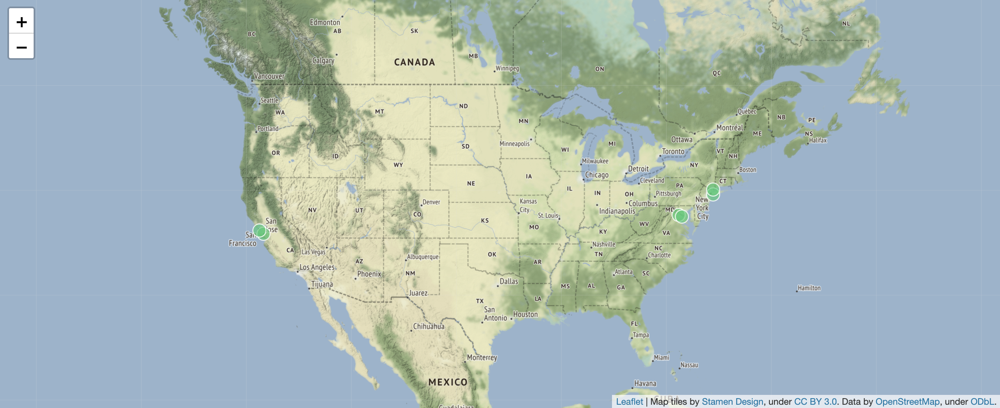
Intermezzo: now we’re curious: what actually are the names of the airports with the shortest flight? (They should be included in the picture above, right?)
FOR f IN flights
SORT f.Distance
LIMIT 1
LET from = (
FOR a IN airports
FILTER a._id == f._from
RETURN a.name )
LET to = (
FOR a IN airports
FILTER a._id == f._to
RETURN a.name )
RETURN [from[0], to[0], f.Distance]Result:
[
[
"Washington Dulles International",
"Ronald Reagan Washington National",
24
]
]6.6. Querying graph data
Although both airports and flights are collections in ArangoDB, we set flights to be an "Edge" collection, which means that it should have a _from and a _to key as it is used to link documents in other collections to each other.
There are 2 types of graphs in ArangoDB: named graphs and anonymous graphs.
Before we run the queries below, we will first create a named graph. To do so, click on Graphs and then on Add Graph. You will be presented with the following box:
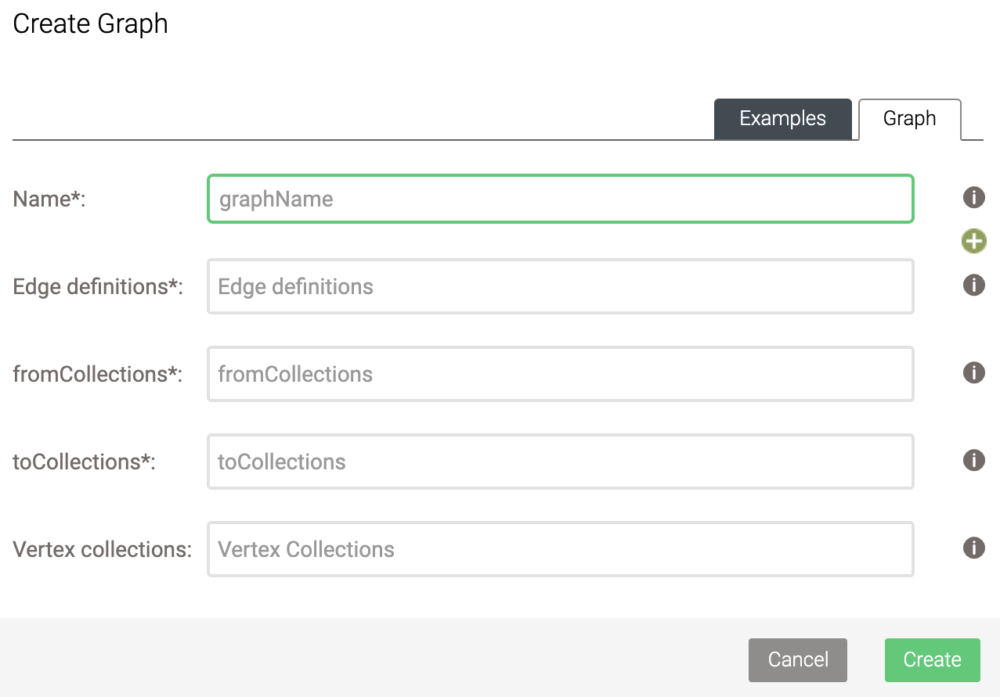
Here, select the following:
-
Name: flightsGraph
-
Edge definitions: flights
-
fromCollections: airports
-
toCollections: airports
-
Leave Vertex collections empty.
6.6.1. Graph queries
Of course what are we with graphs if we can’t ask graph-specific questions. At the beginning of this post, we looked at how difficult it was to identify all friends of friends of James. What would this look like in a graph database?
The FOR syntax looks a little different when you’re querying a graph rather than a collection of documents. It’s
FOR v,e,p IN 2..2 ANY "myKey" GRAPH "myGraph"
LIMIT 5
RETURN v._idThis means (going from right to left):
-
take the graph
myGraph -
start from the document with
_keyofmyKey -
follow links in both directions (
ANYis bothINBOUNDandOUTBOUND) -
for 2 steps (
2..2meansmin..max) -
take the final vertex
v, the last link that lead to ite, and the whole pathpfrom start to finish -
and return the final vertex’s id
The whole path p contains the full list of vertices from source to target, as well as the list of edges between them.
Note that the key graph need to be in quotes. The result of the query
FOR v,e,p IN 2..2 ANY "airports/JFK" GRAPH "flights"
LIMIT 5
RETURN v._idis:
[
"airports/IAH",
"airports/JFK",
"airports/CLT",
"airports/EWR",
"airports/ATL"
]This query is lightning fast compared to what we did with the friends of a friend using a relational database!!
Of course you can add additional filters as well, for example to only return those that are located in California:
FOR v,e,p IN 2..2 ANY 'airports/JFK' GRAPH 'flightsGraph'
LIMIT 5000
FILTER v.state == 'CA'
RETURN DISTINCT v._idThe LIMIT 5000 is so that we don’t go through the whole dataset here, as we’re just running this for demonstration purposes. The result of this query:
[
"airports/SAN",
"airports/LAX",
"airports/ONT",
"airports/BFL",
"airports/SNA",
"airports/SMF",
"airports/FAT",
"airports/SBP",
"airports/PSP",
"airports/SBA",
"airports/PMD",
"airports/MRY",
"airports/ACV",
"airports/BUR",
"airports/CIC",
"airports/CEC",
"airports/MOD",
"airports/RDD"
]You actually don’t need to create the graph beforehand, and can use the edge collections directly:
FOR v,e,p IN 2..2 ANY 'airports/JFK' flights
LIMIT 5000
FILTER v.state == 'CA'
RETURN DISTINCT v._idHere we don’t use the keyword GRAPH, collection is not in quotes.
6.6.2. Rewriting the document query that used joins
Above we said that we’d rewrite a query that used the document approach to one that uses a graph approach. The original query listed all airports in California, and listed where any flights were going to and what the distance is.
FOR a IN airports
FILTER a.state == 'CA'
FOR f IN flights
FILTER f._from == a._id
RETURN DISTINCT {departure: a._id, arrival: f._to, distance: f.Distance}We can approach this from a graph perspective as well. Instead of checking the _from key in the flights documents, we consider the flights as a graph: we take all Californian airports, and follow all outbound links with a distance of 1.
FOR a IN airports
FILTER a.state == 'CA'
FOR v,e,p IN 1..1 OUTBOUND a flights
RETURN DISTINCT { departure: a._id, arrival: v._id, distance: e.Distance}This gives the same results.
airports/ACV airports/SFO 250
airports/ACV airports/SMF 207
airports/ACV airports/CEC 56
...Remember that we actually had quite a bit of work if we wanted to show the airport names instead of their codes:
FOR a1 IN airports
FILTER a1.state == 'CA'
FOR f IN flights
FILTER f._from == a1._id
FOR a2 in airports
FILTER a2._id == f._to
FILTER a2.state == 'CA'
RETURN DISTINCT {
departure: a1.name,
arrival: a2.name,
distance: f.Distance }In constrast, we only need to make a minor change in the RETURN statement of the graph query:
FOR a IN airports
FILTER a.state == 'CA'
FOR v,e,p IN 1..1 OUTBOUND a flights
RETURN DISTINCT { departure: a.name, arrival: v.name, distance: e.Distance}6.6.3. Shortest path
The SHORTEST_PATH function (see [here](https://www.arangodb.com/docs/stable/aql/graphs-kshortest-paths.html)) allows you to find the shortest path between two nodes. For example: how to get in the smallest number of steps from the airport of Pellston Regional of Emmet County (PLN) to Adak (ADK)?
FOR path IN OUTBOUND SHORTEST_PATH 'airports/PLN' TO 'airports/ADK' flights
RETURN pathThe result looks like this:
_key _id _rev name city state country lat long vip
PLN airports/PLN _ZbpOKyy--Q Pellston Regional of Emmet County Pellston MI USA 45.5709275 -84.796715 false
DTW airports/DTW _ZbpOKxu-_S Detroit Metropolitan-Wayne County Detroit MI USA 42.21205889 -83.34883583 false
IAH airports/IAH _ZbpOKyK--- George Bush Intercontinental Houston TX USA 29.98047222 -95.33972222 false
ANC airports/ANC _ZbpOKxW-Am Ted Stevens Anchorage International Anchorage AK USA 61.17432028 -149.9961856 false
ADK airports/ADK _ZbpOKxW--o Adak Adak AK USA 51.87796389 -176.6460306 falseThe above does not take into account the distance that is flown. We can add that as the weight:
FOR path IN OUTBOUND SHORTEST_PATH 'airports/PLN' TO 'airports/ADK' flights
OPTIONS {
weightAttribute: "Distance"
}
RETURN pathThis shows that flying of Minneapolis instead of Houston would cut down on the number of miles flown:
_key _id _rev name city state country lat long vip
PLN airports/PLN _ZbpOKyy--Q Pellston Regional of Emmet County Pellston MI USA 45.5709275 -84.796715 false
DTW airports/DTW _ZbpOKxu-_S Detroit Metropolitan-Wayne County Detroit MI USA 42.21205889 -83.34883583 false
MSP airports/MSP _ZbpOKyi--9 Minneapolis-St Paul Intl Minneapolis MN USA 44.88054694 -93.2169225 false
ANC airports/ANC _ZbpOKxW-Am Ted Stevens Anchorage International Anchorage AK USA 61.17432028 -149.9961856 false
ADK airports/ADK _ZbpOKxW--o Adak Adak AK USA 51.87796389 -176.6460306 false6.6.4. Pattern matching
What if we want to find a complex pattern in a graph, such as loops, triangles, alternative paths, etc (see [above](#subgraph-mapping))? Let’s say we want to find any alternative paths of length 3: where there are flights from airport 1 to airport 2 and from airport 2 to airport 4, but also from airport 1 to airport 3 and from airport 3 to airport 4.
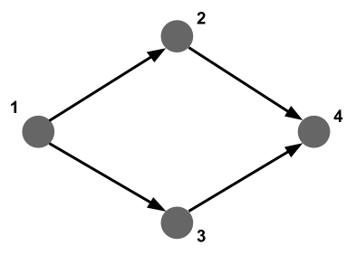
Let’s check if there are alternative paths of length 2 between JFK and San Francisco SFO:
FOR v,e,p IN 2..2 ANY "airports/JFK" flights
FILTER v._id == 'airports/SFO'
LIMIT 5000
RETURN DISTINCT p.vertices[1]._idIt seems that there are many, including Atlanta (ATL), Boston (BOS), Phoenix (PHX), etc.
For an in-depth explanation on pattern matching, see https://www.arangodb.com/arangodb-training-center/graphs/pattern-matching/.
6.6.5. Centrality
As mentioned above, not all ArangoDB functonality is available through the web interface. For centrality queries and community detection, we’ll have to refer you to the arangosh documentation and community detection tutorial.
6.7. Improving performance
As with any other database system, the actual setup of your database and how you write your query can have a huge impact on how fast the query runs.
6.7.1. Indices
Consider the following query which returns all flights of the plane with tail number "N937AT".
FOR f IN flights
FILTER f.TailNum == 'N937AT'
RETURN fThis takes more than 3 seconds to run. If we explain this query (click the "Explain" button instead of "Execute"), we see the following:
Query String:
FOR f IN flights
FILTER f.TailNum == 'N937AT'
RETURN f
Execution plan:
Id NodeType Est. Comment
1 SingletonNode 1 * ROOT
2 EnumerateCollectionNode 286463 - FOR f IN flights /* full collection scan */
3 CalculationNode 286463 - LET #1 = (f.`TailNum` == "N937AT") /* simple expression */ /* collections used: f : flights */
4 FilterNode 286463 - FILTER #1
5 ReturnNode 286463 - RETURN f
Indexes used:
none
Optimization rules applied:
noneWe see that the query loops over all 286463 documents and checks for each if its TailNum is equal to N937AT. This is very expensive, as a profile (Click the "Profile" button) also shows:
Query String:
FOR f IN flights
FILTER f.TailNum == 'N937AT'
RETURN f
Execution plan:
Id NodeType Calls Items Runtime [s] Comment
1 SingletonNode 1 1 0.00000 * ROOT
2 EnumerateCollectionNode 287 286463 1.03926 - FOR f IN flights /* full collection scan */
3 CalculationNode 287 286463 0.10772 - LET #1 = (f.`TailNum` == "N937AT") /* simple expression */ /* collections used: f : flights */
4 FilterNode 1 86 0.17727 - FILTER #1
5 ReturnNode 1 86 0.00000 - RETURN f
Indexes used:
none
Optimization rules applied:
none
Query Statistics:
Writes Exec Writes Ign Scan Full Scan Index Filtered Exec Time [s]
0 0 286463 0 286377 1.32650
Query Profile:
Query Stage Duration [s]
initializing 0.00000
parsing 0.00012
optimizing ast 0.00000
loading collections 0.00001
instantiating plan 0.00007
optimizing plan 0.00106
executing 1.32438
finalizing 0.00050What we should do here, is create an index on TailNum. This will allow the system to pick those documents that match a certain tail number from a hash rather than having to check every single document. To create an index, go to Collections, and click on the flights collection. At the top you’ll see Indexes.
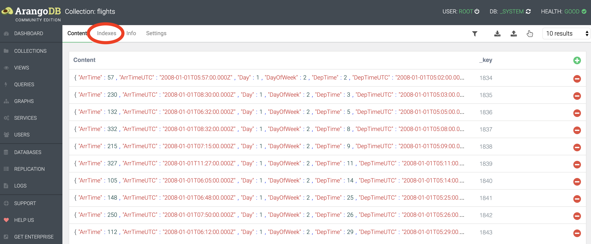
We’ll want to create a persistent index with the following settings (i.e. tail number is not unique across all flights, and is not sparse (in other words: tail number is almost always provided)):
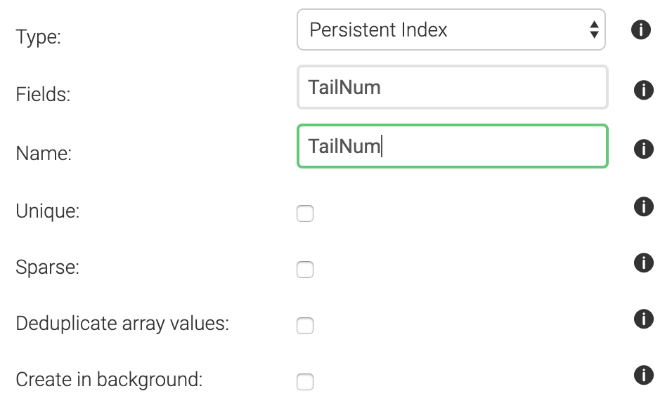
After creating the index, an explain shows that we are not doing a full collection scan anymore:
Query String:
FOR f IN flights
FILTER f.TailNum == 'N937AT'
RETURN f
Execution plan:
Id NodeType Est. Comment
1 SingletonNode 1 * ROOT
6 IndexNode 60 - FOR f IN flights /* persistent index scan */
5 ReturnNode 60 - RETURN f
Indexes used:
By Name Type Collection Unique Sparse Selectivity Fields Ranges
6 TailNum persistent flights false false 1.66 % [ `TailNum` ] (f.`TailNum` == "N937AT")
Optimization rules applied:
Id RuleName
1 use-indexes
2 remove-filter-covered-by-index
3 remove-unnecessary-calculations-2And indeed, running profile gives consistent results:
Query String:
FOR f IN flights
FILTER f.TailNum == 'N937AT'
RETURN f
Execution plan:
Id NodeType Calls Items Runtime [s] Comment
1 SingletonNode 1 1 0.00000 * ROOT
6 IndexNode 1 86 0.00282 - FOR f IN flights /* persistent index scan */
5 ReturnNode 1 86 0.00000 - RETURN f
Indexes used:
By Name Type Collection Unique Sparse Selectivity Fields Ranges
6 TailNum persistent flights false false 1.66 % [ `TailNum` ] (f.`TailNum` == "N937AT")
Optimization rules applied:
Id RuleName
1 use-indexes
2 remove-filter-covered-by-index
3 remove-unnecessary-calculations-2
Query Statistics:
Writes Exec Writes Ign Scan Full Scan Index Filtered Exec Time [s]
0 0 0 86 0 0.00327
Query Profile:
Query Stage Duration [s]
initializing 0.00000
parsing 0.00009
optimizing ast 0.00001
loading collections 0.00001
instantiating plan 0.00003
optimizing plan 0.00016
executing 0.00287
finalizing 0.00009With the index, our query is 406 times faster. Instead of going over all 286463 documents in the original version, now it only checks 86.
6.7.2. Avoid going over supernodes
(Note: the following is largely based on the white paper "Switching from Relational Databases to ArangoDB" available at https://www.arangodb.com/arangodb-white-papers/white-paper-switching-relational-database/)
Super nodes are nodes in a graph with very high connectivity. Queries that touch those nodes will have to follow all those edges. Consider a database with songs information that is modelled like this:
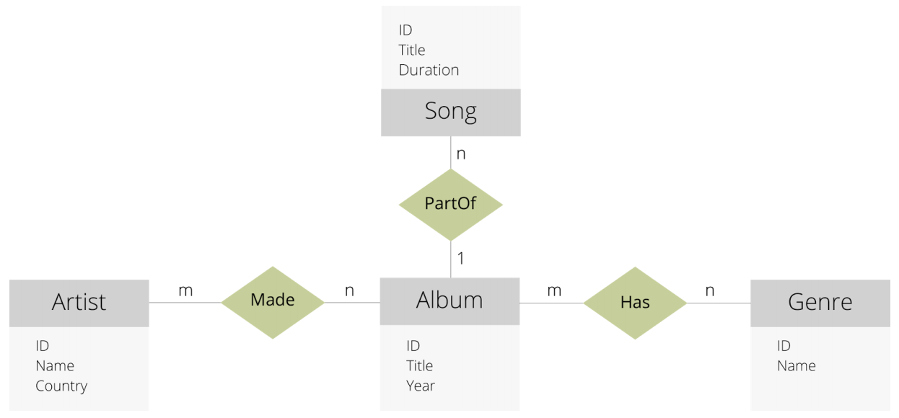
Source: White paper mentioned above
There are 4 document collections (Song, Artist, Album and Genre), and 3 edge collections (Made, PartOf and Has).
Some of Aerosmith’s data might look like this:
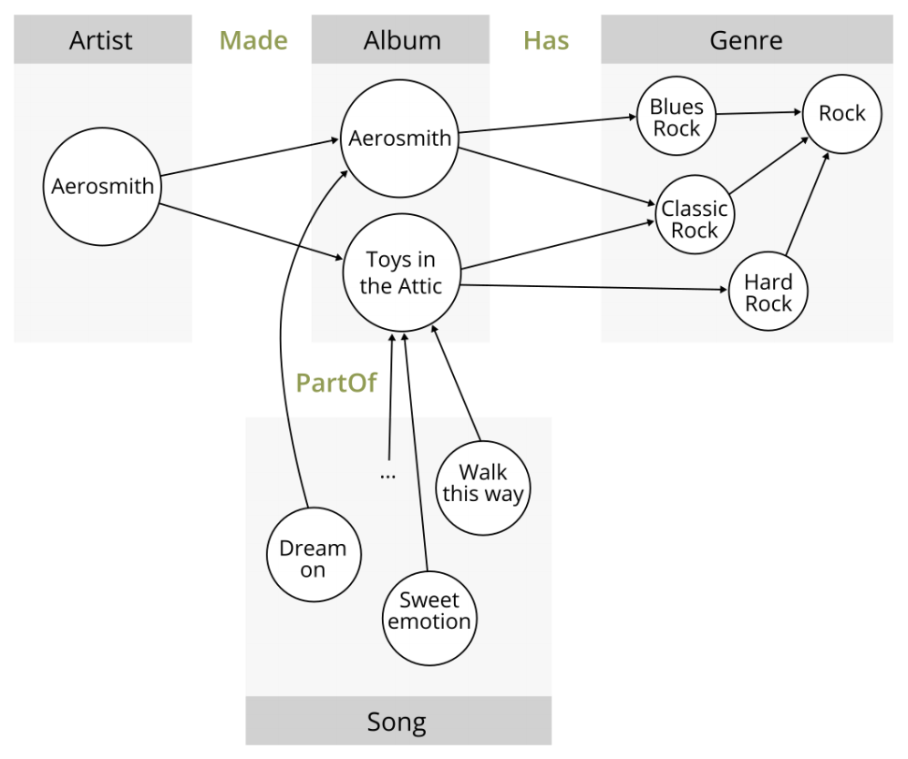
Source: White paper mentioned above
Suppose that we want to answer this question: "“I just listened to a song called, Tribute and I liked it very much. I suspect that there may be other songs of the same genre as this song that I might enjoy. So, I want to find all of the albums of the same genre that were released in the same year". Here’s a first stab at such query.
Version 1:
FOR s IN Song
FILTER s.Title == "Tribute"
// We want to find a Song called Tribute
FOR album IN 1 INBOUND s PartOf
// Now we have the Album this Song is released on
FOR genre IN 1 OUTBOUND album Has
// Now we have the genre of this Album
FOR otherAlbum IN 1 INBOUND genre Has
// All other Albums with this genre
FILTER otherAlbum.year == album.year
// Only keep those where the year is identical
RETURN otherAlbum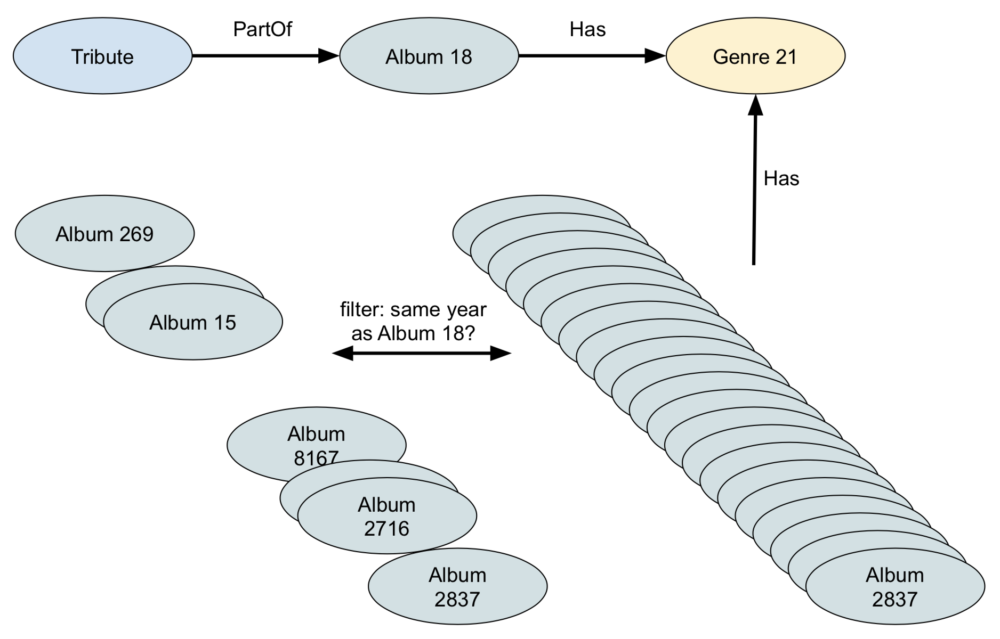
All goes well until we hit FOR otherAlbum IN 1 INBOUND genre Has, because at that point it will follow all links to the albums of that genre. It’s therefore better to first select all albums of the same year, and filter for the genre. This way we’ll only get a limited number of albums, and each of them has only one genre.
Version 2:
FOR s IN Song
FILTER s.Title == "Tribute"
// We want to find a Song called Tribute
FOR album IN 1 INBOUND s PartOf
// Now we have the Album this Song is released on
FOR genre IN 1 OUTBOUND album Has
// Get the genres of this Album
FOR otherAlbum IN Album
// Now we want all other Albums of the same year
FILTER otherAlbum.Year == album.Year
// So here we join album with album based on identical year
FOR otherGenre IN 1 OUTBOUND otherAlbum Has
FILTER otherGenre == genre
// Validate that the genre of the other album is identical
// to the genre of the original album
RETURN otherAlbum
// Finally return all albums of the same year
// with the same genre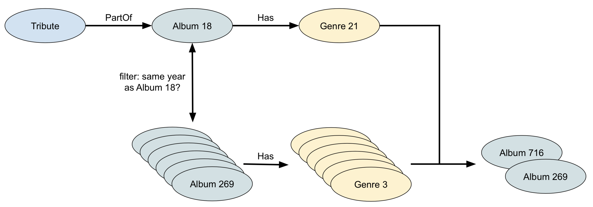
Again, a look at explain helps a lot here.